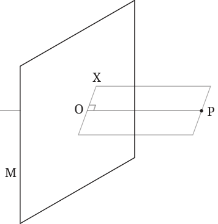
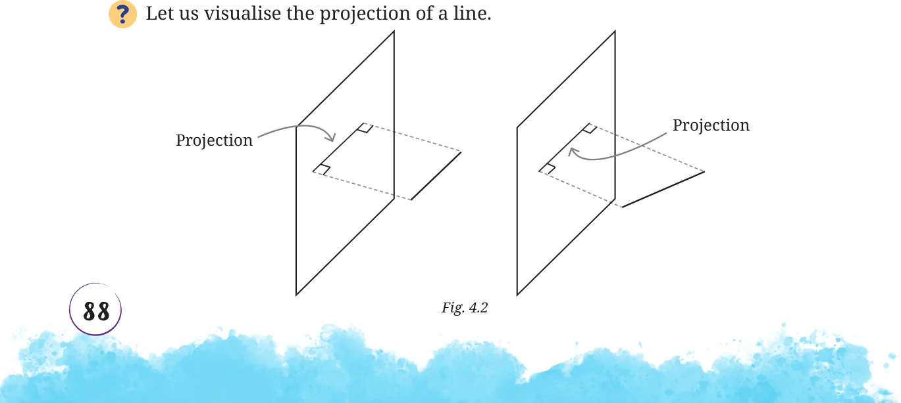
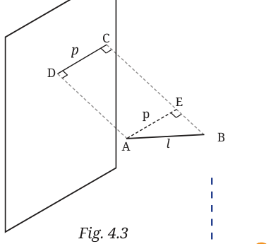
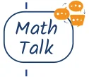
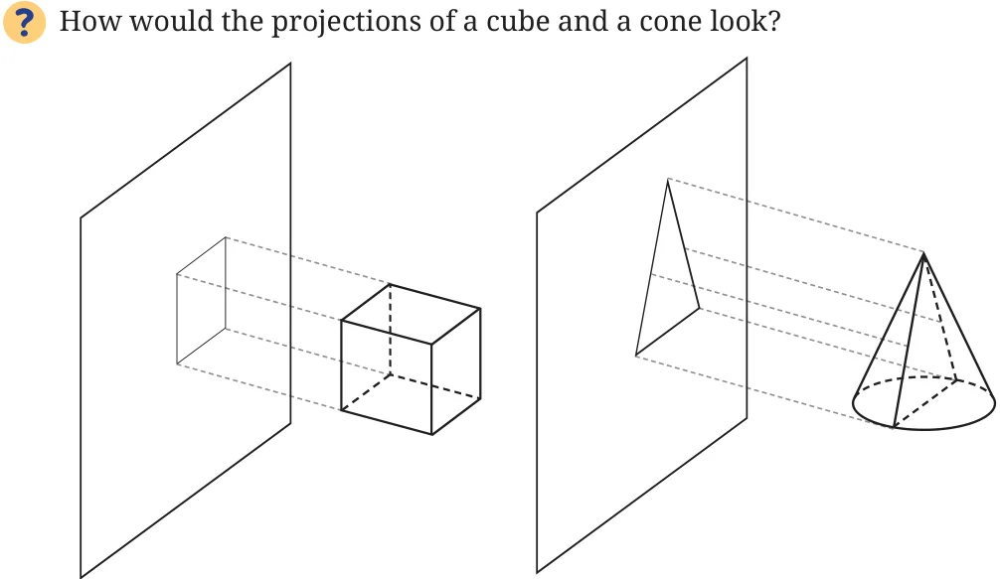
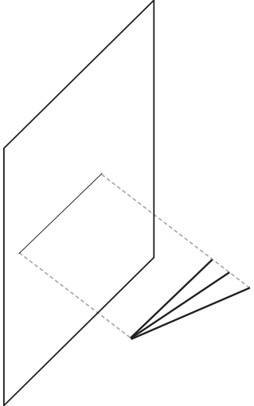
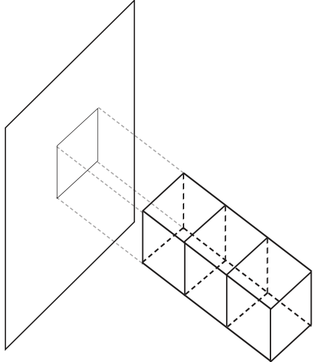
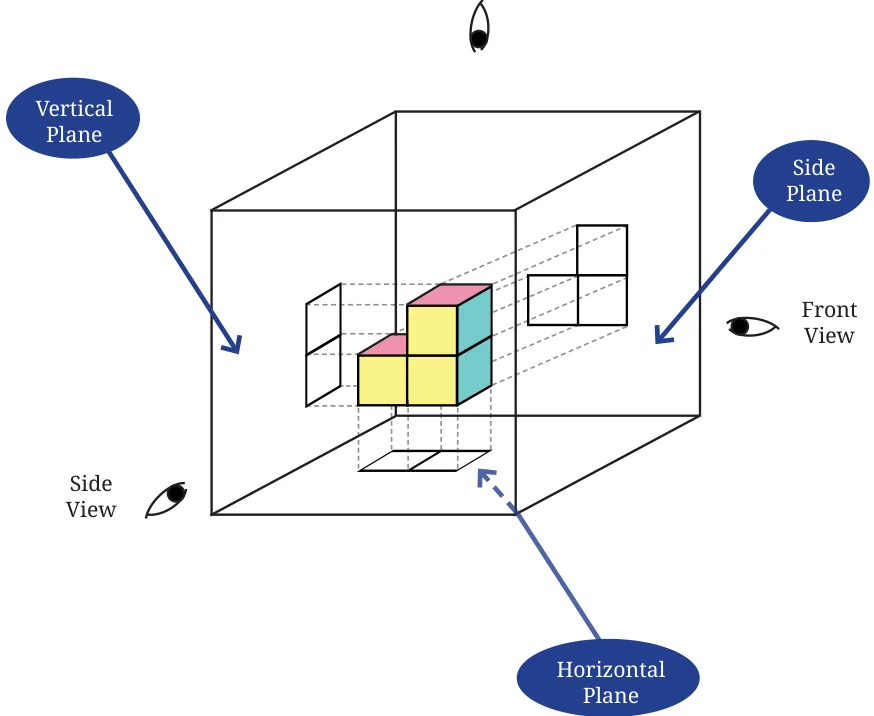
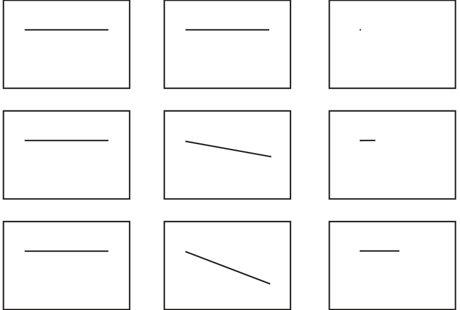

Drawing is one of the oldest human activities. People have been doing it for thousands of years for both aesthetic as well as practical and engineering purposes. Regarding the latter, making a drawing of an object is a useful way to record or convey information about it. Visual representation also helps us in thinking about the objects being represented. Such needs often arise in engineering - while constructing

to be detailed enough so that one can physically construct the objects they depict. We will now explore some ways of drawing solids on a plane.
Projections
The net of a solid (when it exists) is one way of representing a solid on the plane. But it can be difficult to visualise the solid from the net, without physically cutting out the net and folding it up. Another way to represent a solid is by looking at the projections of all its points on a plane. This idea is closely related to the profile of a solid from a specific viewpoint, which we discussed earlier. Let us see how this technique works.

O is the projection of P
Consider a point P in space, and a plane M. Imagine a line from P intersecting the plane M at a point O. We say that OP is perpendicular to the plane if for any line OX on the plane, \(\angle POX = 90 ^{\circ}\) . In this case, we say that point O is the projection of point P on the plane. The projections of all the points of an object together form the projection of the object on the plane.


What happens to the length of a line in its projection? Let us consider projections in Fig. 4.3. For example let l be the actual length of the line and p be the length of its projection. Draw \(AE \perp BC\). AECD is a rectangle (why?). So, \(AE = DC = p\). Also, \(\angle AEB = 90 ^{\circ}\) . Can you now compare the lengths p and l?

When is the length of the projected line equal to its actual length?
What do you think are the different possible projections of a square that we get based on its orientation?
What do you think is the projection of a parallelogram under different orientations? Can this ever be a quadrilateral that is not a parallelogram? As a starting point, you could think about the projection of a pair of parallel lines.
What can you say about the projection of an n-sided regular polygon? [Hint: Projection of a polygon is composed of the projections of its sides.]

Let us consider projections of solids now.


If an object were to pass perpendicularly through a plane and form a hole, the shape of the hole would be the same as the shape of the projection of the object.
See Figures \(4.2 - 4.5\). In each case, see if you can visualise another object that gives the same projection.


Different lines and different cuboids giving the same projections
We see that a given projection is not made by a unique object.

Find another object that makes the same projection as that of a given cone. For this reason, we often take three mutually perpendicular projections of an object. As shown in the figure, we consider a plane in front of the object called the vertical plane, a plane below the object called the horizontal plane and a plane to the side of the object called the side plane.

We give names to the projections on these three planes based on the directions from which the object is viewed. The projection on the vertical plane is called the front view, on the horizontal plane the top view and on the side plane the side view. These projections formalise the notion of profiles that we explored in an earlier section.
Let us see what these projections are for the objects shown in Fig. 4.6, when the planes shown are taken to be vertical planes. Projections of the different lines in Fig. \(4.6 -\)

Front View Top View Side View

Projections of the different cuboids in Fig. \(4.6 -\)
Front View Top View Side View